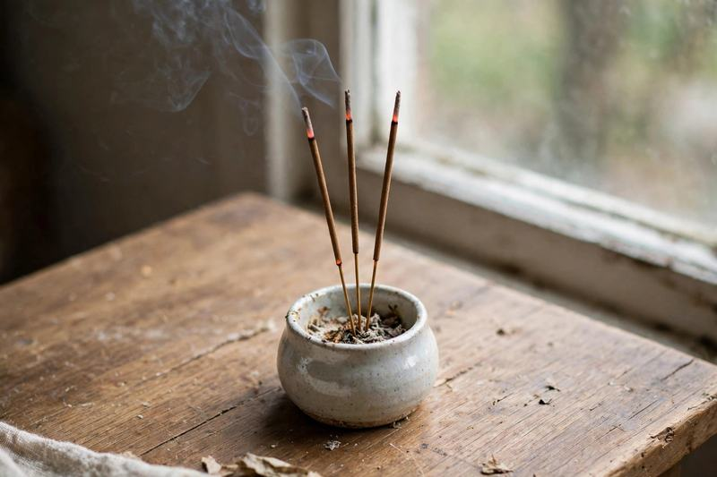

正规线香的配料很简单：沉香粉 + 天然黏合剂（楠木皮粉或榆树皮粉），有的会加少量中药材粉。配料表里出现香精、助燃剂、化学黏合剂、色素的，直接警惕。
没有配料表、只写“纯天然沉香”的，要问商家要配料说明。说不清配料的，先别买。配料含糊，是掺假最常见的遮羞布。
天然沉香线香颜色是自然的棕褐色，深浅有变化，表面略带木质纹理，不会过于均匀。香粉颜色也是棕褐色，粉末细腻均匀，没有明显杂色颗粒。
颜色过于鲜艳、发红发黑，或者表面像刷了漆的，要怀疑染色。线香一碰就断、粉末粗糙带杂质的，工艺和原料都有问题。
点燃后闻：天然沉香线香的燃烧味干净、柔和，有层次，烟不大，不呛鼻不辣眼。香韵会随着燃烧慢慢变化，不会一直一个味道。
燃烧时烟大、呛鼻、辣眼，或者香味单一发甜、带化学味的，大概率加了香精或助燃剂。好的线香烧完后，房间里留下的应该是淡淡的木香，不是刺鼻的甜味。
天然沉香线香的灰一般是灰白色，细腻松散，轻轻一碰就散。灰的颜色发黑、发硬、结块，或者有油腻感的，要怀疑加了杂质。
提醒一句：“香灰不断、灰能弯曲不掉”是很多商家宣传的卖点，但这主要和黏合剂、密度有关，不能单独证明是真沉香。看灰只是辅助手段。
香粉没有线香的燃烧过程，判断主要靠颜色、上炉香和手感。天然沉香粉颜色棕褐均匀，粉末细腻，捏在手里干燥松散，没有结块。颜色发白、发灰，或者颗粒粗细不一、混着杂色颗粒的，要怀疑掺了杂木粉或滑石粉。
上炉试香：取少量香粉放在隔片上低温加热，天然沉香粉出香干净、有层次，凉意甜意随温度变化。香味单一、发闷、带化学味，或者加热后有焦糊味的，大概率掺了香精或杂木粉。香粉受潮结块、发霉的不要用，存的时候注意密封干燥。
掺杂木粉：用普通木粉冒充沉香粉，成本低，香味淡，靠加香精补香。掺滑石粉、碳酸钙增重：粉末发白，手感滑腻，烧完灰发白发硬。
加香精调香：闻起来很香，但燃烧味单一、化学感重。加硝酸钾之类的助燃剂：容易点燃、烧得快，但烟大呛鼻。
原料是哪个产区的沉香？沉香粉占比多少？配料除了沉香粉和黏合剂还有什么？有没有检测报告？
答得清楚的商家不怕问；只会说“老料”“纯天然”却答不出配料的，先别买。
| 检查项 | 正常表现 | 要警惕的表现 |
|---|---|---|
| 配料表 | 沉香粉 + 天然黏合剂 | 香精、助燃剂、化学黏合剂 |
| 外观 | 棕褐自然，深浅有变化 | 过于鲜艳、发红发黑像刷漆 |
| 燃烧味 | 干净柔和有层次，烟不大 | 烟大呛鼻，单一甜香化学味 |
| 香灰 | 灰白细腻，轻碰即散 | 发黑发硬结块，有油腻感 |